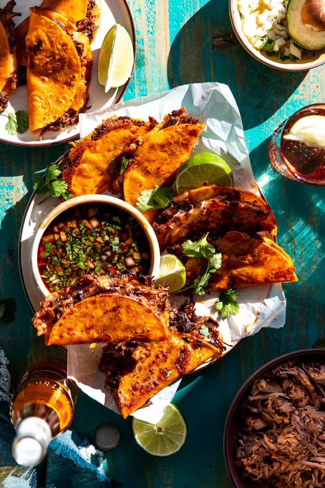

Birria tacos!

Description
Beautiful taste of mexico! This dish is huge in the streets of many urban cities and mexico itself.
easy to make and fast to eat, youre gonna need a few things
Ingredients
- Dried Chile peppers
- Beef
- Seasonings
- Olive Oil
- Tomatoes
- White vinegar
- Tortillas
- Onion & Cilantro
Steps
Like any cooking task a little patience and recipe following with a lil bit of love,
youll be enjoying any dish. These tacos are no different and while it seems like the
recipe is difficult it really isnt! just follow these simple rules and youll be enjoying
this latino delight in no time!
- Boil the dried peppers for 5 minutes, then remove from heat and let the peppers soak until the water is cool. Drain, reserving some water.
- Season the beef and sear on all sides on all sides in oil in a pan (dutch oven pref.)
- Grill the tomatoes until the skin is blistered and begins to peel
- Blend the soaked chili peppers with reserved Chile water, tomatoes, vinegar, and Seasonings
- Strain the sauce and pour over the meat. cover the pan and cook until the meat begins to fall apart, basting often. Allow the meat to rest, then shred.
- Warm the Tortillas on the griddle. Fill each tortilla with meat, onions, and cilantro
ENJOY!